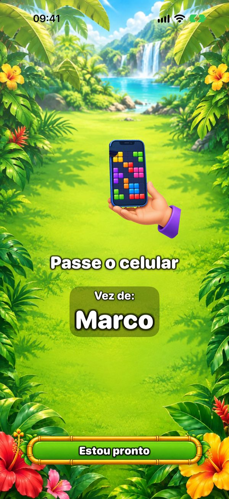
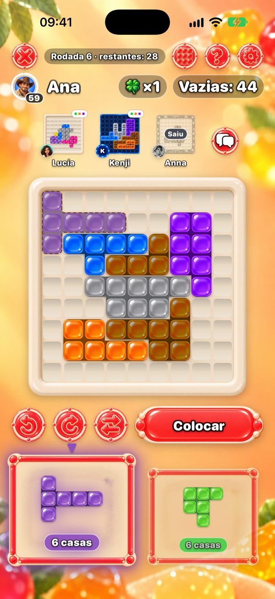
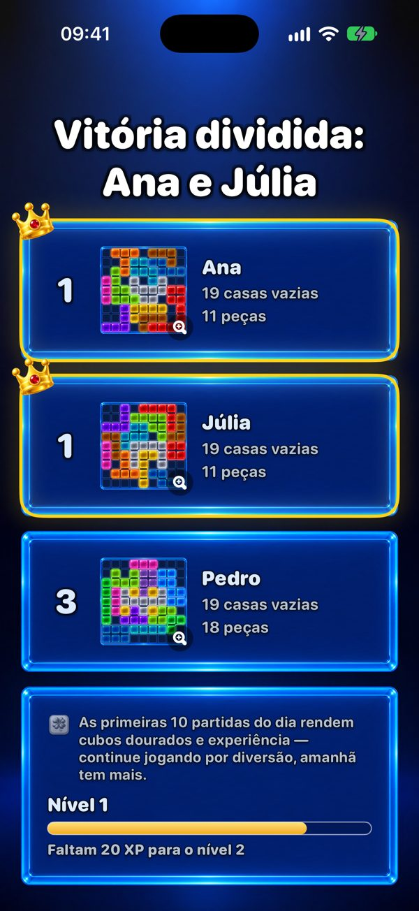

Um jogo para jogar juntos em um celular só
Procurando algo para a família toda jogar em um celular só? One More Chance é um quebra-cabeça que passa de mão em mão: cada um preenche o próprio tabuleiro 9×9 com as mesmas peças, e ganha quem deixar menos casas vazias.


Como se joga em um celular só?
Cada um começa com uma peça inicial sorteada, que cobre o centro do tabuleiro. Depois, a cada rodada aparecem duas peças. O primeiro jogador escolhe uma e a coloca onde quiser no próprio tabuleiro — as peças podem ser giradas e espelhadas — e passa o celular. Uma tela de “Passe o celular” mostra de quem é a vez. Todos recebem as mesmas duas peças, então a rodada é justa; só muda como cada tabuleiro cresce.

Quantas pessoas podem jogar?
Dois jogadores, grátis. Com Premium — uma compra só, sem assinatura — até seis pessoas jogam em um celular ou iPad. Para um grupo grande, um iPad na mesa é perfeito.
Cada um pode usar o próprio celular?
Sim. Celulares próximos se conectam por Bluetooth e Wi‑Fi — sem internet — e todos jogam ao mesmo tempo, vendo no alto os tabuleiros dos outros. Só quem cria a partida precisa de Premium para mais de dois jogadores.

Quem ganha?
Quem deixar menos casas vazias. Se nenhuma peça couber, você pega “Mais uma chance”: uma peça extra só para você. Um tabuleiro perfeito, totalmente preenchido, é o grande objetivo.

Quanto tempo dura uma partida?
Uma partida tem no máximo 20 rodadas. Sozinho, leva poucos minutos; em grupo depende de quanto cada um pensa, porque cada vez é uma peça. Com Premium dá para limitar a vez a 30, 60 ou 90 segundos.
Para qual idade é?
Na App Store a classificação é 13+ por causa do chat opcional com amigos e dos anúncios. O jogo em si são peças coloridas num tabuleiro: sem violência, sem pressa se o cronômetro estiver desligado, e não é preciso ler para colocar uma peça — os pequenos podem jogar ao lado de um adulto.
É grátis? Tem anúncios?
O jogo é grátis. Os anúncios aparecem só entre partidas solo — nunca numa partida com amigos, nem em um celular, nem em vários. O Premium tira os anúncios e traz mais seis temas e até seis jogadores.
Precisa de internet?
Não. Em um celular só e em vários celulares por perto, o jogo funciona sem conexão. A internet só é usada nas mesas online, nos amigos e no ranking do Desafio diário.
Noite de jogos hoje?
Grátis no iPhone e iPad. Passe o celular e descubra quem deixa menos casas vazias.
Versão para Android em breve.